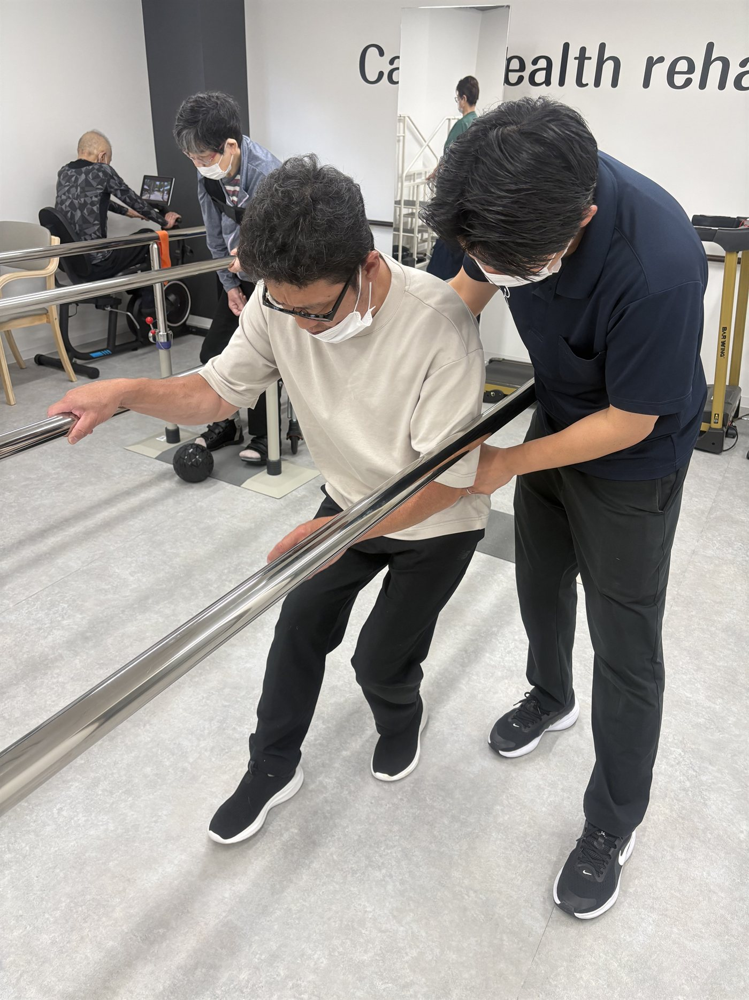
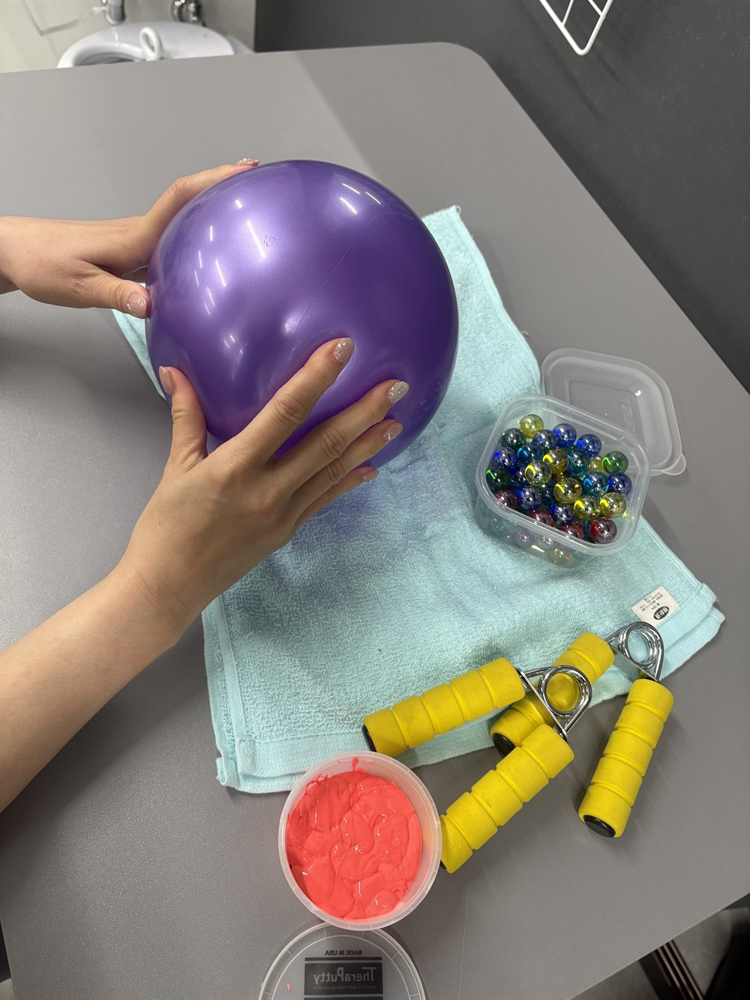
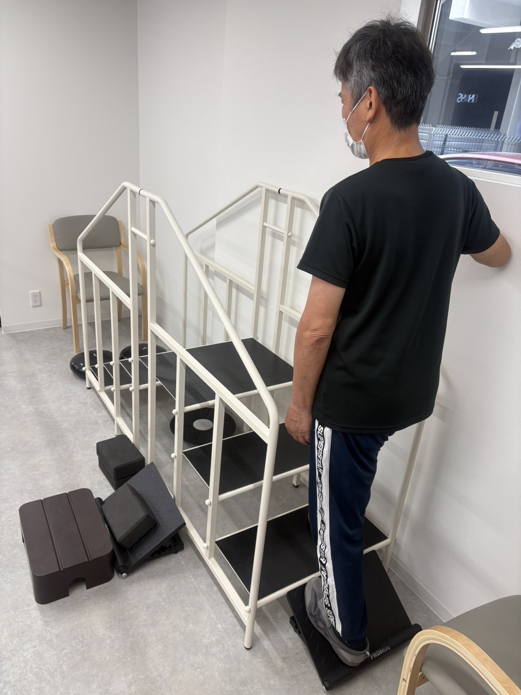

脳卒中
リハビリ
脳卒中後の回復を、専門的なリハビリでしっかりサポートします。
脳卒中リハビリとは
脳卒中によって生じた麻痺や運動障害、バランス障害などに対して、身体機能の回復や維持を目的に行うリハビリです。残存機能を活かしながら、日常生活動作の改善を目指します。
こんな方が対象です
脳梗塞・脳出血の後遺症がある方
片麻痺がある方
歩行が不安定な方
手足の動かしづらさがある方
退院後の生活に不安がある方
主な内容
関節可動域訓練
筋力トレーニング
歩行訓練
バランス訓練
上肢・手指の機能訓練
日常生活動作訓練
福祉用具を使った動作練習



安全への取り組み
- 体調・バイタルの確認
- 麻痺や症状に応じた個別プログラム
- 無理のない負荷設定
- 転倒予防を重視したサポート体制
期待できる効果
- 歩行能力の向上
- 日常生活動作の改善
- バランス能力の安定
- 麻痺側の機能維持・改善
- 生活の自立度向上
脳卒中の後遺症は、適切なリハビリで改善や維持が期待できます。当施設では、一人ひとりの状態に合わせて、安心して続けられるリハビリを提供しています。